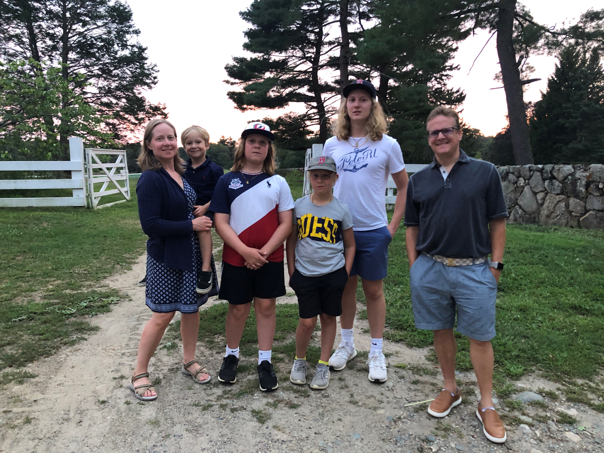
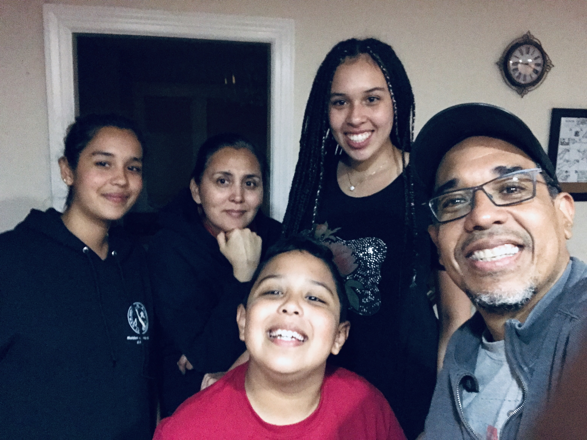

News & Events
Hybrid Homeschooling
The term hybrid homeschooling
is being bandied about a lot this summer, one idea being that someone can homeschool but drop their child off at some kind of program
for one or two days a week, or more. Other definitions might be homeschooling while taking some classes at the local public school, joining a coop, or using accredited online programs while homeschooling. Read more.
UPCOMING EVENTS
- Wednesday, July 22, 2020
Getting Started Homeschooling - FULL
6:30 – 8 pm
Virtual – Hosted by Robbins Library, Arlington, MA
Space is limited; preregistration required.
Register online.
Click here to see more events.
Meet Massachusetts Homeschoolers: Isabella Watkins
By Isabella Watkins
My parents and I only intended to homeschool while I was in fifth grade, then I would go back to my old school for sixth, seventh, and eighth grades.
On the first day of fifth grade, I woke up at around eight in the morning, made teacher nametags for my parents and a student one for myself, and sat down at the table in my room with every intention of recreating the school environment. This routine lasted about four or five days, until my parents surprised me with the question: What would you like to do today?
Read more.
Legislative Update
Bills regarding vaccination
Update on use of term home school
in bills regarding vaccination
S.2763 - New draft of S.2359 AN ACT PROMOTING COMMUNITY IMMUNITY by Rebecca L. Rausch
H.4784 - New draft of H.4096 AN ACT PROMOTING COMMUNITY IMMUNITY by Paul J. Donato, Rebecca L. Rausch
Both bills have been amended to include the following language in section 238 of Chapter 111 [Public Health] of the General Laws: Read more.
Meet Massachusetts Homeschoolers: The Kern Family
LIFE SCHOOLING
By Anne Kern
In the late summer of 2018—with excitement and some trepidation—I drove out to western Massachusetts with my homeschooled daughter Jamila and watched her begin her college career. Had homeschooling prepared her well enough? Was she as academically fit as the schooled students? Was this the end of homeschooling? Read more.
Student Charlie Cards
The MBTA issues student fare media to middle school and high school aged homeschoolers for use on the MBTA system. In August, they will be issuing student Charlie Cards for the 2020-2021 Academic School Year. Read more.
Meet Massachusetts Homeschoolers: Jordan Kammeyer

By Jordan Kammeyer
Why would a straight-A student who loved school decide to leave it after ninth grade?
My name is Jordan, and I am a 17-year-old high school senior. I am the oldest of five children, and I live on a two-acre homestead in the Berkshires of Massachusetts. Here we have raised chickens, sheep, rabbits, and pigs, and have been homeschooling for the past several years. Read more.
LEGISLATIVE UPDATE - JUNE 2020
Our Massachusetts Legislature began its 191st session on January 2, 2019. Below is a summary of bills filed this session that AHEM is following. At this time no action needs to be taken on any of these bills. Read more.
Meet Massachusetts Homeschoolers: The Yeracaris Family

Reflections on a Homeschooling Adventure
By Janet Yeracaris
When my husband and I got married, we bought a house in a town with excellent schools, fully intending to have our kids educated by the public system. By the time we had two actual children, and I was seeing how they were growing and learning, how creative and quick and inventive they could be, I thought, We’ll see how this school thing goes.
I knew that most schools, regardless of how well funded, are very box-like, and there is a great deal of fitting-in
that must be done to be successful in that environment. Sure enough, as each of them started elementary school, it became clear to me that they were likely to thrive being cut loose to learn in their own time and in their own way. I already knew other homeschoolers, and the leap to a home-based education was not a big one. We left the box behind and set off for adventure. Read more.
Meet Massachusetts Homeschoolers: The Blessed Family

By DommiesBlessed
“Where’s the schooling? Where’s the structure?”
I could feel my throat tightening as my husband and father to our three girls asked me what seemed to be rhetorical questions. Why can’t he see that our children are happy, healthy, and brilliant? Has he read their monthly progress notes where I document their growth? Has he asked them what they are most proud of this week? What’s wrong with them playing with their dolls, studying on YouTube, gaming on Roblox, and building on Minecraft? Read more.
Meet Massachusetts Homeschoolers: The Rubin Family
By Robin Rubin
The first time I heard anyone mention homeschooling was when I was pregnant with my first child, back in 2003. During a pre-natal exercise class, one of the mothers mentioned that her family was going to be attending a homeschooling conference soon (her older child was around 5 years old). Intrigued, I asked her why they were homeschooling. She said because they did not want to rush childhood. I thought that was interesting, and it turned out to be a comment I would never forget. Read more.
Yum: A Bite-Sized and Nourishing Homeschooling Strategy for All Ages

By Sophia Sayigh
Are you struggling with the kids home full-time since schools closed, or were already homeschooling but are feeling the effects of being cooped up without the usual access to the whole wide world? Everyone, school families and homeschoolers alike, are feeling the strain of not being able to get together with friends and loved ones. To you I offer this strategy to reset life at home under the stay-at-home advisory. Read more.
Meet Massachusetts Homeschoolers: The Perez Family
By Patricia Zarate Perez
With almost 60 million Latin@s living in the United States, it is very possible one such family is homeschooling in Massachusetts. Los Perez, with mother Patricia from Chile, father Danilo from Panama, and children Daniela (16), Carolina (14), and Danilo Andres (9) have lived in a liminal space for decades. In the intersection of the LatinX immigrant community, the academic circles of Boston, and the musical world of Berklee College, homeschooling is at the core of our values. Read more.
HOME WITH KIDS IN THE TIME OF COVID-19

Maybe you have subscribed to our list or are visiting our website because you have unexpectedly found yourself at home all day with your kids. You may have seen some blog posts and articles with suggestions for how to manage having kids around all day. I know I have. Some pressure parents to impose school-like schedules on kids so that kids won’t fall behind. Here I have tried to draw on the wisdom of practicing homeschoolers in these difficult times. Trying to recreate school at home can be stressful. And goodness knows, none of us need more stress in our lives right now. So here is a short list of tips for being around your kids 24/7 that have been successful strategies for many a homeschooling family. Read more.
Volunteer Opportunities
AHEM needs your skills, expertise, and helping hands!
Library Survey
Got 5 minutes? Help us prepare for the MLA conference by responding to this questionnaire about homeschoolers and libraries by April 15, 2020.
Find out about other opportunities to help out.Behind the Scenes at AHEM: Meet Melissa
Melissa Monaghan lives in Arlington with her family. She homeschooled her two children from preschool through high school and loved learning alongside her children, exploring their interests, and seeing them pursue their passions. Read more.
Getting Started Homeschooling
Posted: January 2, 2020
Saturday, January 11, 2020, 10:30 am - noon
Whether you are actively considering home education or are just curious about how it is done, you are invited to attend Getting Started Homeschooling. The free program will be held in the Fels Community Room of the Pearle L. Crawford Library, 40 Schofield Ave, Dudley, MA on Saturday, January 11, 10:30 am – noon (snow date January 25, 2020).
Topics to be covered include an overview of homeschooling, getting started, methods, resources, and homeschooling support. Informational handouts will be available and there will be time for questions and discussion.
The program will be presented by Sophia Sayigh. Sophia is a co-founder of Advocates for Home Education in Massachusetts, Inc., a non-profit 501(c)(3) charitable educational organization that gathers and disseminates information about homeschooling in Massachusetts through education, advocacy, and events. She is also the author of a fictional book featuring homeschoolers, Unschoolers.
Admission is free, but preregistration is suggested. Preregister here.
Space is limited and spots are allotted on a first come, first served basis.
Please respect AHEM’s mission to empower individuals through education by not soliciting for your business at this event.